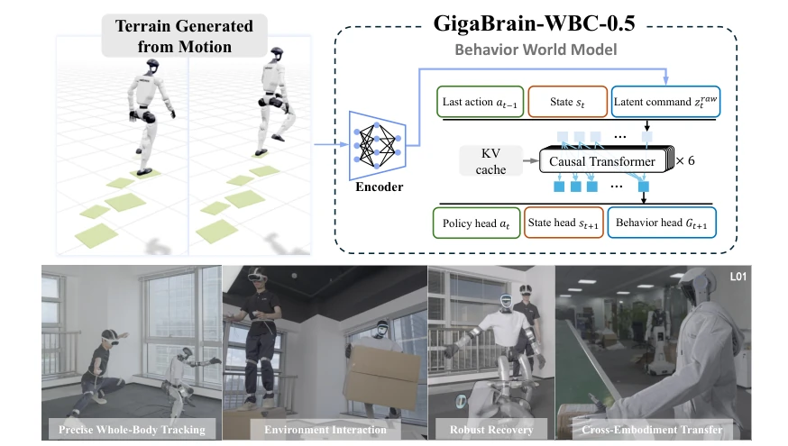
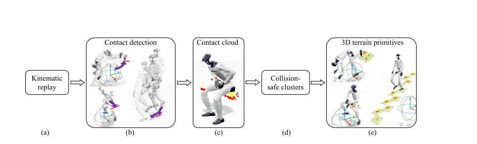
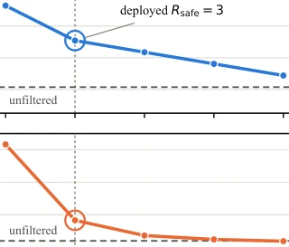
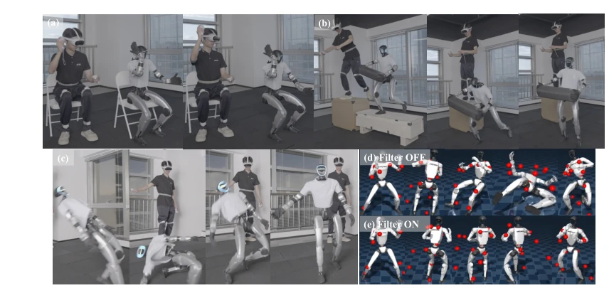

现有全身追踪策略（如 SONIC [23], HoloMotion-1 [5]）多在空场景平地训练，无法处理地形交互。一旦环境变化（如台阶、椅子），动力学改变，策略就失效。单纯扩大参考运动库无法覆盖环境依赖的可行集，因为可行行为集随环境条件变化。此外，遇到不可行指令或跌倒时，现有方法往往紧急停止或依赖独立控制器，打断任务。需要一种能在线识别不可行指令并“尽力而为”执行，且能自我恢复的鲁棒控制器。SceneBot [7] 尝试了交互，但依赖 2.5D 高程图且需接触标签，不适合在线操作。
—

Figure 1. GigaBrain-WBC-0.5: the first Behavior World Model for humanoid whole-body control. GigaBrain-WBC-0.5 couples automatic motion–terrain annotation with a causal Behavior World Model. Recov- ering full 3D contact geometry from ordinary retargeted motions scales spatially grounded interaction training beyond flat-ground corpora, enabling the policy to exploit environmental contacts. Jointly predicting the action, next proprioceptive state and next-command distribution lets the same network act while modeling what can happen next, and turns its predicted distribution into an online criterion for retracting implausible commands to best-effort behaviors. The resulting live-command controller combines precise tracking, object-and-terrain interaction, fall recovery without a separate cont
Figure 2. GigaBrain-WBC-0.5 overview. (a) The reference window ct is perturbed with noise and, for the robot-relative root translation, intermittently masked, then mapped by an MLP encoder to the latent behavior command zraw t ; a finite scalar quantizer and a decoder reconstruct the clean reference for a training-only cycle-consistency loss (dashed). (b) [st, at−1, zt] is processed by a 6-layer causal Transformer with a KV cache; three heads emit the action at, the next proprioceptive state st+1 (aligned against parallel-simulator rollouts), and the Gaussian Mixture Model (GMM) Gt+1 over the next latent command. (c) At deployment, a stateless Mahalanobis test checks zraw t against Gt—the mixture emitted one step earlier—and radially retracts out-of-distribution commands onto the safety el

Figure 3. From motion to spatial terrain. (a) A retargeted motion is replayed kinematically. (b) Contact detection flags frames where a sampled surface point’s normal and tangential velocity fall below threshold (arrows show incoming velocity at the moment of contact). (c) Detected contacts accumulate into a 3D point cloud. (d) Points are grouped into collision-safe clusters after the whole-body penetration filter. (e) Each cluster is fitted with proper primitives, giving the 3D terrain used for training—genuine spatial geometry rather than a height field, so chairs, tables, boxes and stair treads are all representable.
Figure 8. Whole-body motion capability. Agile motion, household tasks and industrial tasks, all produced by one tracking policy under live whole-body command. Frames are badged with the robot they were recorded on: the controller runs on a Unitree G1 and, after the fine-tuning of Section 3.5, on a Maker L01.
其他图片Other Figures

Figure 6. Robustness versus precision as a function of the safety radius. Standard-split MPKPE (in- distribution fidelity) and OOD success rate against the single filter parameter Rsafe. Small Rsafe shrinks the admissible ellipsoid and projects more aggressively, buying OOD survival at the cost of in-distribution tracking; large Rsafe approaches the unfiltered policy (dashed). The circled radius Rsafe = 3 is the operating point reported in Table 3.

Figure 7. Robustness to unsafe commands and to physical disturbances. (a, b) Removing the chair or platform invalidates the original command, yet the policy settles into a stable best-effort behavior instead of a emergency stop, in which case the carried object would be dropped. (c) The same tracking policy recovers from a kick-induced fall without a separate recovery controller. (d, e) Under the same self-interfering and challenging spinning-kick reference in simulation, disabling the safety filter causes the robot to attempt the kick and fall (though subsequently recover); enabling it preserves the commanded turn, suppresses the difficult kick and keeps the robot upright.